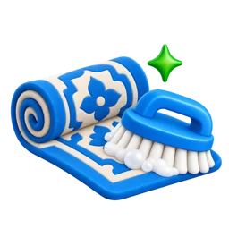

Xizmatni tanlang
Kerakli xizmatni tanlab, qisqa arizaga o‘ting.
Chang, dog‘ va hidlarni mato turiga mos texnologiya bilan bartaraf etamiz.

Sifat kafolatiNatija yoqmasa, bepul qayta tozalaymizGoClean Toshkentda gilam va mahkamlangan gilam qoplamalarini tozalaydi. Xizmat changni olib tashlash, ko‘rinadigan dog‘larga ishlov berish, chuqur yuvish va quritish bosqichlarini o‘z ichiga oladi. Gilam turi va vazifani ariza yuborgandan keyin operator bilan aniqlashtirishingiz mumkin.
Hisoblash tartibini aniqlashtirish uchun gilam yoki mahkamlangan qoplama ekanini, sonini, taxminiy o‘lchamini, yorliqdagi materialni va ko‘rinadigan dog‘larni operatorga ayting. Maydonni aniq bilmasangiz ham ism va telefon bilan ariza qoldirishingiz mumkin.
Avval tozalanadigan buyum alohida gilammi yoki polga mahkamlangan qoplamami, shuni aniqlang. Gilamlar soni, taxminiy uzunligi va eni, yorliqda ko‘rsatilgan materiali hamda ko‘rinadigan dog‘lar haqida ayting. Yorliq yoki material noma’lum bo‘lsa, buni ham operatorga bildirish yetarli.
To‘g‘ri to‘rtburchak gilamning taxminiy maydonini metrda o‘lchangan uzunlikni eniga ko‘paytirib topish mumkin: masalan, 2 × 3 metr — taxminan 6 m². Noodatiy shakl, bir nechta bo‘lak yoki mahkamlangan qoplama bo‘lsa, hisoblash tartibini operator bilan aniqlashtiring.
Gilam qayerda tozalanishi, uni topshirish va qaytarish tartibi hamda tayyor bo‘lish vaqti ariza formasida belgilanmaydi. Sizga muhim bo‘lgan shartlarni operator bilan oldindan kelishing. Sahifa olib ketish, yetkazib berish yoki joyida yuvish xizmatga avtomatik kirishini va’da qilmaydi.
Ha. Ism va telefon raqamini qoldirish yetarli. Gilam o‘lchami va boshqa tafsilotlarni operator bilan keyin aniqlashtirasiz.
Gilam yoki mahkamlangan qoplama ekanini, sonini, taxminiy o‘lchamini va ma’lum bo‘lsa materialini ayting. Operator amaldagi hisoblash tartibini tushuntiradi.
Ko‘rinadigan dog‘ qayerdaligi, nimadan paydo bo‘lgani ma’lum yoki noma’lumligi va unga avval nima ishlatilganini ayting. Barcha dog‘ yoki hid to‘liq ketishi oldindan va’da qilinmaydi.
Ish bajariladigan joy hamda gilamni topshirish, olib ketish yoki qaytarish imkoniyati operator bilan alohida kelishiladi. Bu xizmatlar sahifada avtomatik kiritilgan deb ko‘rsatilmagan.
Tayyor bo‘lish vaqti sahifada qat’iy belgilanmagan. Muddatni gilam turi, vazifa va kelishilgan ish shartlari asosida operator bilan aniqlashtiring.
GoClean выполняет чистку ковров и закреплённых ковровых покрытий в Ташкенте. Услуга включает удаление пыли, обработку видимых пятен, глубокую стирку и сушку. Тип ковра и задачу можно уточнить с оператором после отправки заявки.
Чтобы уточнить порядок расчёта, сообщите оператору, идёт ли речь об отдельном ковре или закреплённом покрытии, их количестве, примерных размерах, материале на ярлыке и видимых пятнах. Заявку можно оставить по имени и телефону, даже если площадь пока неизвестна.
Сначала определите, нужно очистить отдельный ковёр или покрытие, закреплённое на полу. Сообщите количество ковров, примерную длину и ширину, материал на ярлыке и видимые пятна. Если ярлыка нет или материал неизвестен, просто скажите об этом оператору.
Для прямоугольного ковра умножьте длину на ширину в метрах: например, 2 × 3 метра — это примерно 6 м². Для ковра необычной формы, нескольких частей или закреплённого покрытия порядок расчёта лучше уточнить с оператором.
Место выполнения работы, порядок передачи и возврата ковра, а также время готовности не задаются в форме заявки. Обсудите важные для вас условия с оператором заранее. Страница не обещает, что вывоз, доставка или чистка на месте автоматически входят в услугу.
Да. Достаточно указать имя и номер телефона. Размер ковра и другие детали можно уточнить с оператором позже.
Уточните, это отдельный ковёр или закреплённое покрытие, назовите количество, примерные размеры и материал, если он известен. Оператор объяснит действующий порядок расчёта.
Сообщите, где находится видимое пятно, известно ли его происхождение и чем его уже обрабатывали. Полное удаление всех пятен или запахов заранее не обещается.
Место выполнения работы и возможность передачи, вывоза или возврата ковра согласуются с оператором отдельно. На странице эти варианты не указаны как автоматически включённые.
Фиксированный срок на странице не указан. Уточните время готовности с оператором с учётом типа ковра, задачи и согласованных условий работы.
Kerakli xizmatni tanlab, qisqa arizaga o‘ting.
Faqat ism va telefon raqamingiz yetarli.
Manzil, vaqt, xizmat tarkibi va narxni telefonda aniqlashtiring.